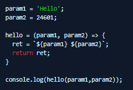
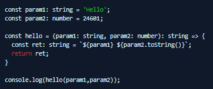
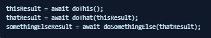
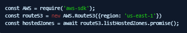
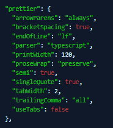

Contents
- What is TypeScript?
- Interacting with External TypeScript Modules
- When Should I use JavaScript and When Should I use TypeScript?
- Turning JavaScript into TypeScript
- Writing Asynchronous JavaScript
a. Chaining Dependences in Asynchronous Code
b. Promises
c. Working with the AWS SDK for JavaScript Version 2 - The JavaScript/TypeScript Development EcoSystem
a. Overview
b. package.json
c. npm & yarn
d. Gulp
e. tsc & tsconfig.json
f. ESLint
g. TSDoc and TypeDoc - Conclusion
What is typescript?
TypeScript is JavaScript...with Types! It's a language one level higher than JavaScript that is compiled (actually transpiled) into JavaScript in order to execute. The types are not enforced at run-time, they are enforced at compile-time. TypeScript is a boundary that ensures you are writing strongly-typed code before it is compiled into an untyped execution environment. TypeScript is the enforcement of a contract to use the right data between functions, modules, packages and other developers, which makes sure the resulting code does only what it is supposed to do. This means that we continue to benefit from the speed and agility of JavaScript at run-time while benefiting from structure and rules while developing. Another significant benefit is that while there are many different ways to run JavaScript both in browser environments and otherwise, which have different rules that govern the code you can write, TypeScript knows about them, and can be configured to compile your code to be compatible with different runtime environments. Almost like a real language(!).
Interacting with external TypeScript modules
TypeScript is a developer tool that enforces types at compile-time. It has nothing to do with run-time. At run-time, all you have is JavaScript that was transpiled from the TypeScript source. This means that when you work with other people's TypeScript code, you are not interacting with their TypeScript, you are interacting with their JavaScript. In order to develop with type safety, TypeScript creates definitions files. You can see these as files with a .d.ts extension alongside the JavaScript files with a .js extension. It is these definitions files that allow your TypeScript to reference and interact with the Type declarations in other peoples’ code, while still actually executing your transpiled JavaScript with their transpiled JavaScript.
In short, when you use the import command to import someone else's module into your code, if TypeScript finds type definitions for the module you are importing, items in the type namespace will be imported into your TypeScript along with the function and variable exports.
When Should I use JavaScript and when should I use TypeScript?
If you have a simple script designed to do one job, that will be written once and then forgotten about and makes very simple use of data structures, you don't need to bother setting up a TypeScript project. The hassle of having a pipeline to rebuild the code alone simply isn't worth it, and not being able to easily tweak the compiled code on the fly is a pain. You can still interact perfectly well with TypeScript modules and get the job done.
That said - don't be lazy! Just because you can throw something simple together in JavaScript, keep the bar low on the choice to upgrade to TypeScript. Just as projects written in Bash can get out of hand and you can quickly realise (usually as soon as you start using Bash v4 Associative Arrays) that you probably should have written the project in a proper language rather than a CLI, don't go too deep in JavaScript before you Do The Right Thing.
This isn't to say you can't write everything in TypeScript, even single small files, and just use tsc to transpile it on-demand and ts-node to execute it interactively, but in reality, it's just not an efficient way to work for something independent and tiny. Use your own judgement.
Turning JavaScript into TypeScript
This is an exercise everyone should do...once! It is cumbersome and painful, but extremely educational. You should do it once and then forever after beginning your more-than-just-a-hack projects in TypeScript.
In short, you take your JavaScript and then add a colon after every symbol you declare, followed by the Type of that symbol (or return type for functions): void, any, null, undefined, string, number, boolean, Array<string>, "NameOfComplexObject", Array<"NameOfComplexObject"> . You then make sure that, when you handle data, you treat types with respect and cast things between types as necessary. You also act like a proper grown-up and declare all your variables (and declare anything that's actually constant as const) - TypeScript presumes 'use strict' .

becomes

Now, technically I'm talking rubbish because you do not need to declare types for anything that can be inferred. If you are declaring a constant and assigning a string literal to it, there is no need or value in explicitly declaring the type as string. It can sometimes be difficult to know when a type can be inferred, but thankfully ESLint will tell you.
When it comes to classes and complex objects, it's a simple matter of declaring interfaces and types. If you create a class, you create an Interface that describes the class's properties and methods just as you might in Java. An interface can extend to another interface. If you just want to create a complex object made up of properties of different types, you use a type declaration instead of an Interface. A type is pretty much the same thing as an interface, but it cannot use inheritance.
Writing Asynchronous Javascript
I'm not going to teach you how to understand Asynchronous JavaScript code, a good visual primer is available here. But I can tell you what you need to know to be effective.
The core concept is that JavaScript is by default single-threaded and synchronous, but the execution is actually run in an event loop that prioritises certain actions over other actions using three queues/stacks: the call stack, the microtask queue, and the task queue. When all you have is simple synchronous code, you've just got statements being pushed to the call stack and executed. Calling a function just means the function call and its return sit in the stack waiting for the code inside the function to be processed because it more recently got added to the stack; procedural code as you would normally expect it to work. As soon as you invoke asynchronous code somewhere, you are going to disrupt the order in which tasks are done. Instead of a statement causing a new call to enter the call stack, it creates a task in the task queue or the microtask queue, which is a lower priority than the call stack. You are saying to the event loop: "do this asynchronous block of code as soon as you get a free second to get around to it".
It's really quite simple, but if you don't visualise that happening when you write your code you have things happening in seemingly random orders and, for a platform engineer, it usually means your lambda function reached the "I'm done, shut me down" call, before it got as far as doing the asynchronous task you asked it to do.
A) Chaining Dependencies In Asynchronous Code
While there's a fair amount to be understood about what code will be executed in which stack or queue and in what precise order, in most cases when developing code for interacting with the AWS APIs via the AWS SDK for JavaScript, what you need to know is that this asynchronicity is invoked whenever you are interacting with Promises or calling a function which is explicitly async.
There are two ways you will deal with this so that you can be sure that whatever needs to be done gets done in an order you can anticipate: callbacks and async/await.
Callbacks
Historically the way you would handle this is to chain actions with nested callbacks - effectively saying doThis().then(doThat().then(doSomethingElse())). The problem with doing this is that you can't achieve synchronisation with unrelated tasks. You can kick off doThis and perform one chain of actions with the results, but you can't escape from that chain. The whole lifecycle of everything that happens after doThis() exists in one deeply-nested tree of callbacks. This is not unreasonable for browser-based website development because it aligns with the user journey of browser-based actions and asynchronous object manipulation. It absolutely sucks when you are trying to manipulate AWS via the APIs because there are lots of completely unrelated API calls you want to make where you need to get some information and then do an arbitrary number of disconnected things with that information that feeds into new process chains.
Async/Await
The solution to this is the async/await structure. This makes use of the await keyword to tell the event loop to suspend processing anything until a Promise has been resolved, or more usually until the async function you called has returned something. Hypothetically, this is a bad thing to do because you are wasting execution time pausing something when unrelated pseudo-parallel actions could still be going on in the background, but in reality doesn't work this way and if your process has serial dependencies, your code must be able to implement them.
Becomes:

The key value here is that you have access to the results of each of these asynchronous function calls at your top-level scope. Whatever you need to do with thisResult, thatResult or somethingElseResult, you can do without it being scope-contained to functions that are chained beneath doThis(). The minor drawback is the loss of performance that everything your code does has to wait until doThis() has been completed, even if it doesn't depend on the value of thisResult. You are blocking things that might not need to be blocked. If this is a significant performance problem, you can code around it, you can combine async/await and callbacks together, or refactor your code to order things in the most efficient possible chain. But, frankly, we are mostly dealing here with platform engineering tasks that are not microsecond-sensitive in performance terms and have serial dependencies – so there’s no need to worry about it. Get the job done with async/await and address performance improvements with whatever experience you have when it's appropriate.
Note: the await keyword can only be used in an async function. In the context of platform engineering development you probably need to be using await all over your code and from very early on, so the very first thing your code needs to do is declare an async "main" function, and then call it, or in the case of lambda, make sure your lambda handler function is itself declared as async.
B) Promises
Promises are incredibly hard to understand for simple platform engineering development because every example expresses problems in terms of the Web API and the use of setTimeout. These things are meaningless when you are writing a script to make a couple of AWS API calls in NodeJS.
Promises are easy if you explain them in simple terms. A Promise is a container in which you stuff a bunch of code that needs to be executed. The event loop "promises" you that that code will eventually get executed, as soon as it can get around to it, but in the meantime will crack on with whatever is more urgent in the call stack. Most functions that interact with external APIs use promises so that hanging around for several seconds waiting for a response from some internet-endpoint to give you some data doesn't hold up your code execution.
A promise has two possible end states: it succeeded (resolve()) or it failed (reject()). Traditionally, you handle these states with callbacks: Once the code has finished executing: if it succeeded, doSomething(); if it failed, handleTheFailure(). This approach allows you to kick something off and disown it. You don't care when it finishes, only that it finishes as soon as it can. Whichever way it goes, success or failure will kick off the correct actions in response. The promise will return either something valuable or a rejection exception. These are invoked by the code inside the promise passing values to the resolve() or reject() functions that the Promise makes available to the code.
When you make a Promise in your code, the return you get from the Promise is "a promise to give you a return value". If you want to wait until the Promise has been resolved (or rejected) and get the value (or exception) straight away, just await the Promise. If you don't need to pause your execution right now, then you can hold on to the Promise and get its result later. Maybe when you come back to it, the work will already have been done - maybe it won't. In the worst case, the execution will take place when you eventually demand the result; in the best case, background time will have been free to get the result by the time you ask for it.
For as much as it matters to you in this context, whenever you call an async function, you're calling a promise to execute the function, and you can await the function result, or not.
If you want or need to make a custom Promise it's easy and really helps understand how promises work:

C) Working with the AWS SDK for JavaScript version 2
I say version 2 because although version 3 is Generally Available, it is not at the time of writing included by default in AWS Lambda, and it has some significant changes - some for the better, some for the worse - that I'm not ready to talk about with any authority.
My first bit of advice in working with the AWS SDK for JavaScript is don't. Use the get-AWS-results module from Orgtomate. Mostly all you care about is individual read and write calls to AWS APIs, and when you perform reads you almost always want all of the pages of results in one result object. That's what this module's getAwsResults function provides to you. You tell it the name of an AWS Service (e.g., Route53), the name of an operation (e.g., listHostedZones), any custom parameters you want to be given to the Service object constructor or the Operation call, and it will do the work for you in creating the service object, making the call, and paginating results wherever automatic pagination is possible. You will get one result object containing what you needed.
If you need or want to work with the SDK directly there are several ways to do so, but I recommend one of two simple approaches:
- Use and await the SDK promise() functions.
- Use event listeners and wrap them in your own promises.
Wherever possible, just use the promise() functions.
Promise Functions

It doesn't get much simpler than that. Import the SDK, create a Service object, await a Promise that will return to you the value the API returns.
You must be careful that there is no implied pagination here. If listHostedZones truncates your results and gives you a token you can use to go and get another page of results, you need to account for that. You need to know how the pagination token configuration works for Route53 listHostedZones calls, the conditions in which more pages may be available, and repeatedly make the API call with consecutive tokens until you get a result that has not been truncated, and then you can gather the results of all of your calls into one results object.
If, however, you are making a Write call to the API, or making a filtered read call that will return just one object, or information about one object, you need not worry about pagination.
Event Listeners
If you need to get creative and chain some callbacks based on the success or error of the API call you want to make, then you can take the event listener approach. This is the approach taken by the get-AWS-results module so that it can recursively paginate results where pagination is supported.
First, you create the AWS Request object, then you register event listeners that call a callback for each of the success and error results, and then you .send() the Request. Because you are now locked into callback hell, unable to return your final result to your top-level scope - which you almost certainly still want to do - you can wrap the whole process in a promise and call the resolve() and reject() functions once you have some final result.

The JavaScript/TypeScript Development Ecosystem
So, now you can write some JavaScript that efficiently makes AWS API calls, you need a project repository you can start writing your code in and you need developer tools for ensuring the quality of your code and building and distributing it.
Here is some guidance, focussed on the implementation for Orgtomate, in how to make use of the JavaScript/TypeScript development ecosystem.
A. Overview
- The package.json file defines the JavaScript project.
- The tsconfig.json defines the TypeScript parts of the project.
- TSC does the compilation and produces the TypeScript definitions files.
- Gulp is the build manager.
- Yarn is the package manager.
- TypeDoc is the tool that produces documentation written to the TSDoc standard.
- ESLint is the code validation tool.
When you make changes to code, you can use ESLint to check the changes. When you compile, you use a gulp task to run ESLint and then compile. When you make changes to documentation you use a gulp task to run ESLint to validate the TSDoc syntax, and then compile.
B. package.json
The package.json is the manifest that describes your project and its tooling ecosystem. This is not just a file for creating and publishing public modules, you need this file.
Many of the tools in the ecosystem integrate with the package.json for your project. Most importantly, yarn or npm, which will manage your packages and dependencies based on the content of your package.json file. Tools will often allow you to either have an RC file explicitly for the tool, or you can create a config object in your package.json.
Example
This is the current package.json from Orgtomate:

NPM and Yarn are competing package managers for JavaScript. Pick one and use it. For Orgtomate, I use yarn. They both have drawbacks. I can't really recommend one over the other.
D. Gulp
Gulp is a Makefile for JavaScript, written in JavaScript.
TypeScript has a compilation stage. TypeDoc/TSDoc has a compilation stage. When compiling you should also be validating code quality with ESLint. Orchestrating that these build steps happen when needed, in order, can be done with Gulp.
You can either call gulp commands you have declared directly, e.g. gulp build, gulp clean, or you can alias them as commands in your package.json so that you can execute them with yarn.
Example
This is the gulpfile.js for Orgtomate.

tsc is the tool that compiles (technically "transpiles") your TypeScript into JavaScript.
The package.json is a JavaScript project file. The TypeScript project file is tsconfig.json. This is what turns your JavaScript project into a project that contains TypeScript that needs transpiling. The tsconfig.json works hierarchically so there may be more than one in your project if you have source files in different locations. In the case of something simple like Orgtomate, the tsconfig.json lives in the src/ directory along with the TypeScript source files.
The tsconfig.json in Orgtomate directs tsc to put the transpiled JavaScript files in the dist/ directory which is where the final distributable executables, and their associated TypeScript definitions files, live.
We use the gulp-uglify plugin to minify the distributable JavaScript because it is effectively a compiled artefact, and does not need to be readable or maintainable, and every little bit of performance optimisation helps.
Example
This is the tsconfig.json for Orgtomate.
The critical part is: "extends": "@tsconfig/node14/tsconfig.json" which is all the dirty work in stating "This is a NodeJS v14 project" and configures the basics for you.
The include statement declares which files to compile, using the compilerOptions .
The rest of this file is configuration options for TypeDoc, which could have been in their own RC file, but are better left embedded in the tsconfig that tools can share as common config.

Linting matters. This is how you maintain standards and consistency in your code. Do not commit anything that doesn't pass your linting checks.
The JavaScript linter is called ESLint. There was a TypeScript linter called TSLint. It died. It was determined to be a duplication of ESLint with no value over and above a Typescript plugin for ESLint.
ESLint brings together all the checks you want to use from lots of different sources, including integrating tools like prettier. Be careful that conflict is your responsibility. Multiple checks from multiple sources may fail at once for the same problem. If you have configured prettier to follow different rules to other rules from elsewhere, you will never have a successful test as one of the two conflicting rules will always be failing. The examples here from Orgtomate should be clean and non-conflicting.
Configuration
The main relevant files are .eslintrc and .eslintignore.
.eslintrc Example
This is the YAML ESLint configuration for Orgtomate - and if you have nothing today, and no strong opinions on standards, is the base configuration I recommend you use. I do have strong opinions on standards, and they are reflected in this configuration.

In order to deal with a large number of linting errors it is a complete pain to deal with all of the output in one big dump. ESLint Nibble allows you to interactively address each individual rule failure, and also to autofix any automatically fixable rules independently.
This is integrated into the Orgtomate package.json as two commands: nibble and nibble-one to either lint and nibble the whole project, or just one specific file.
Prettier
Prettier is a pretty-printer and layout standardiser for JavaScript that integrates with ESLint.
While the prettier config can be in its own file, it's easier to keep it in the package.json.
This is the prettier config for Orgtomate:

G. tsc & tsconfig.json
TSDoc is a Microsoft-owned standard for TypeScript module documentation similar to JSDoc. It is similar - it is not the same.
TypeDoc is a program for creating Documentation from the code comments in TypeScript code.
TypeDoc existed before TSDoc. TypeDoc almost completely implements the TSDoc standard, but not completely. Eventually they will probably converge. This is why the Orgtomate code currently has a linting warning on @inheritDoc tags. TypeDoc and TSDoc implement @inheritDoc differently and the TSDoc linter does not allow you to configure an override to ignore issues with certain tags.
Orgtomate uses the GitHub Pages plugin for TypeDoc and orchestrates TypeDoc compilation with Gulp. This populates a local docs/ directory with HTML content from both the project README.md file, and the code comments in the TypeScript source to produce a navigable documentation website that is hosted directly out of the repository by GitHub Pages.
This isn't always ideal because you must independently run a compile step to produce what is effectively an artifact directory for documentation that is then committed to the codebase. It would be preferable for the documentation source to be in the repository, built into a website external to the repository, but the availability of GitHub pages and the ease and simplicity of using it to publish the documentation makes the compile-and-push step in the documentation process worthwhile.
Conclusion
With the basics above, a grasp of JavaScript syntax, and the example project and code available in the Orgtomate project, you should have everything you need to knock together simple scripts and Lambda functions in TypeScript, just as you might do with Python. The result will be more portable and faster than it would have been in Python; and hopefully that will drive your enthusiasm to choose TypeScript or JavaScript whenever it is the right tool for the job and not avoid it just because of an unfamiliarity with it.